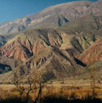
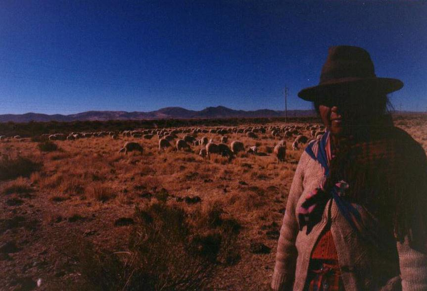

Viernes 27 a las 8:00 No debí haber desayunado, pero las tostaditas con manteca y dulce fueron una tentación. Y me habría alcanzado con tomar solamente una taza de café. Pero sin darme cuenta, seguí sobrecargando mi sistema digestivo prácticamente paralizado. Pronto estábamos en el micro, avanzando de nuevo hacia el norte por la enorme quebrada, y en ascenso. Me encantaba la idea de visitar las alturas extremas. Pero parece que mis mecanismos biológicos no estaban en todo de acuerdo. En forma preventiva había aceptando un generoso ofrecimiento de hojas de coca, y ya se habían convertido en un "bollito", disimuladamente escondido en mi mejilla derecha.  Tras casi una hora pasamos la ciudad-pueblo de Humahuaca, y pronto salimos del gran valle y comenzamos a ascender más vertiginosamente. El paisaje de hermosos y escarpados cordones de montañas compuestos de rocas de gran colorido comenzó a ceder. Ahora era más frecuente ver suaves lomadas cubierta por una vegetación baja de coriones, similar a partes de la estepa patagónica. Pero en la distancia siempre había picos o cerros que sobresalían de la ya altísima meseta. Estábamos en la puna.Y me apuné. La falta de oxígeno socavaba mi salud. Me sentía flojo, débil, mareado y con leve malestar. Cualquier maniobra que intentaba realizar significaba un esfuerzo titánico. Solamente encontraba gran alivio cuando efectuaba un suave y sostenido jadeo: así la respiración forzada aportaba a mis pulmones más litros del diluido aire. Pero no podía realizar este ejercicio permanentemente, puesto que también era cansador. Tenía la clara sensación que mi "sistema operativo", aquel controlador inconsciente que determina la actividad de las funciones vitales, había procedido a desconectar diversos "servicios" no esenciales. La digestión ya había sido suspendida hace mucho. Evidentemente todo esfuerzo físico consume oxígeno, pero ahora tenía pruebas que las actividades mentales también lo hacen, por que muchas facultades de la razón fueron dados de baja transitoriamente: equilibrio, memoria, calculadora, motricidad fina, gusto, orientación espacial, dicción, sensatez... Ya quedaba muy poco de mí. Mi situación era similar a la de una nave espacial tripulada que anda con problemas de suministro eléctrico, cuando los controladores terrestres apagan sistemáticamente todo equipamiento que no sea esencial para el sustento de la vida. Pero también comprobé que mis prioridades estaban muy bien asignadas: ¡nunca perdí la voluntad de observar aves ni la habilidad de identificarlas! Sin embargo debo admitir que me costaba mucho concentrarme en cualquier proceso intelectual. El micro pasó Abra Pampa y unos minutos más adelante se detuvo al costado de la ruta. Estábamos frente a una gran laguna que se extendía a la derecha del camino. El agua estaba a cierta distancia, así que apenas podíamos distinguir la numerosa población de aves acuáticas que lo habitaban, visibles como delicados puntitos casi blancos. Era la laguna de Runtuyóc. Yo era el único del grupo en sentirme tan mal, pero no me iba a perder esta caminata. Allí, en ese campo de pastos semi-inundados, habitaban diversas especies de aves específicas de este hábitat, y que por lo tanto yo nunca había visto antes. Entre las vedettes de este destino figuraban tres especies de flamencos, de las cuales dos viven y crían a sus pichones solamente en estas desoladas lagunas de altura: la Parina Grande y la Parina Chica. Ya de por sí muy raras, temo que estén destinadas a desaparecer algún día, como tantos otros de nuestros bichos, cuando el rebalse poblacional de la especie humana alcance la puna. Al visitar por primera vez este lugar parece imposible que ello ocurra, pero tarde o temprano les llegará su hora. Por lo pronto, la localidad de Abra Pampa es el bastión de vanguardia, cuya solitaria existencia en esa planicie azotada por vientos de nitrógeno parece incomprensible. Pero evidentemente hay gente que necesita o quiere vivir allí.  Cuando el micro se detuvo al costado del camino, descendimos. Lo primero que hice fue acercarme a una pastora que, perdida en la inmensidad puneña, atendía allí un rebaño de ovejas junto a su pequeño hijo. Intercambiamos algunas palabras, aunque confieso que me resultaba muy difícil entender su forma de hablar el español. Se llamaba Sebastiana, y pagaba al terrateniente un animal al mes por el derecho de pastoreo. Vestía prendas de gran colorido, muy típicas. Tras tomar un par de fotos, nos despedimos.El grupo avanzaba hacia la laguna. Me costaba horrores tratar de alcanzar a los primeros, quienes cargaban ahora dos telescopios, indispensables para la observación dada la distancia que había que mantener entre aves y observadores. No vaya a ser que la bandada levante vuelo... Delante de nosotros deambulaban docenas de flamencos, todos disfrazados como bailarinas con trajecito rosado. Pero... ¿Cuál era la especie que estábamos observando? Las tres variedades son muy similares y, al tratar de diferenciarlas, no se llegaba a un consenso. Se instaló un encendido debate entre los que más sabían. Era de esperar que la más común de las especies, el flamenco austral, aportaría la mayor cantidad de individuos. Y convencidos de la validez de esta hipótesis, los especialistas no llegaban a identificar un solo individuo de las dos especies más raras. De repente, uno del grupo observó lo que sin lugar a dudas era un ejemplar de la especie más común, claramente diferenciado: Comprendimos entonces que la casi totalidad de los flamencos que teníamos delante nuestro eran Parina Chica. ¡Que magníficas rarezas! La ley de probabilidades - y tal vez una dosis de apunamiento - había logrado engañar momentáneamente hasta los más avezados. Observamos también otras especies únicas, pero la belleza de los flamencos las eclipsaba. Se veían por doquier, sobre la enorme la laguna enmarcada por distantes cerros. Estas grandes aves de piernas largas y frágiles caminaban por la laguna pantanosa, alimentándose de crustáceos acuáticos. Observamos que algunas partes de la laguna estaban aún congeladas, constituyendo una pista de patinaje natural. Cuando el viento soplaba, los flamencos que caminaban encima del hielo derrapaban por falta de un punto de anclaje. Se veian obligados a realizar todo tipo de maniobras de equilibrio: desenvolvían sus alas y entrecruzaban sus piernas como bailarines de tango ornamental. Otras veces dos o tres ejemplares nos demostraron su majestuoso vuelo, exponiendo el intenso carmín de sus alas al efectuar un batido lento, mientras que sus piernas se extendían hacia atrás, perfectamente horizontales. ¡Que extraña y hermosa forma tienen al volar! El rosado del cuerpo contrastaba con el profundo color del cielo que, a estas alturas, tomaba un tono saturado, casi azul marino. Es que aquí arriba estábamos casi en órbita... Así transcurrió una mañana soleada y fresca, inmersos dentro de un cuadro surrealista de extraños colores. El apunamiento me aquejó todo el tiempo, aunque los ejercicios respiratorios me devolvían momentáneamente la salud, como en un extraño sube y baja. En un momento el malestar parecía ser una dolencia incurable, y la buena salud tan solo un distante recuerdo que, sin mucha esperanza, ansiaba con recuperar. Y luego de incrementar voluntariamente la respiración, franqueaba una frontera invisible y, de repente, advertía haber recuperado la salud. Entonces la sensación era precisamente la inversa: al sentirme bien ya no comprendía cómo era posible que segundos atrás haya estado tan mal, ni recordaba claramente cuales eran las dolencias. Pero con seguridad nuevamente volvería a caer en la desdicha. Me separé del grupo para iniciar, a mi propio ritmo, el largo camino de regreso al micro. Entonces sobrevoló un hermoso Cóndor, el único que vi en todo el viaje. Ya cerca de la ruta me puse a perseguir un pequeño pajarito marrón, de esos que son muy difíciles de identificar, y que recorría por el suelo entre los arbustos bajos. Tras mucha persecución, mechada de cortos e imperfectos avistajes, me animé a proclamar un veredicto: Canastero Pálido. Me sentí muy orgulloso cuando, al hacercarse el resto de los integrantes, los grandes conocedores confirmaron mi identificación. Lo notable es que les bastaba apenas una rápida miradita para anunciar la especie con total certeza. En cambio yo había demorado más de un cuarto de hora. Tras almorzar unos sándwichs al borde del camino, retomamos hacia Abra Pampa, y desde el pueblo nos desviamos un par de kilómetros hacia el oeste, para visitar otras lagunas. Allí estuvimos apenas una hora. Fuimos bendecidos con la presencia de la hermosa Avoceta Andina, una Gaviota Puneña, y pudimos completar la especie faltante de flamenco, la Parina Grande. Aquí observamos como, por efecto de una identificación inicialmente errónea, una rarísima y distante Gallareta Gigante se transmutó en Pollona Negra, posiblemente el ave acuática mas común del mundo... La curiosa Avoceta Andina es una de las aves más bonitas. Es una zancuda de tamaño mediano, más alta y vistosa que un Tero. El color de su cabeza y cuerpo es un blanco impecable, y tiene las alas, espalda y cola negras. La vimos recorriendo una laguna de escasa profundidad, alimentándose de bichitos acuáticos. Los atrapa por medio de un insistente movimiento lateral de su cabeza, con el pico sumergido. He aquí uno de los rasgos más notables de esta especie: su pico, fino y bastante largo, se curva hacia arriba. De esta manera, cuando camina por el agua con el cuello agachado, el pico queda prácticamente paralelo a la superficie del agua, donde supuestamente encuentra más alimento. En contraste, los flamencos tienen el pico fuertemente encorvado hacia abajo, pero curiosamente logran así prácticamente el mismo resultado: cuando se agachan en el agua, quedando su cuello casi vertical, el pico termina apuntando hacia atrás, y entonces nuevamente queda casi paralelo a la superficie, lo que evidentemente les es útil para atrapar crustáceos. Pronto estaríamos volviendo, dejando atrás este mágico enclave puneño. Al promediar nuestro descenso al valle recuperé mi salud, y diría que experimenté lo que se siente al entrar en una carpa de oxígeno. Volvieron a aparecer los cardones, llegamos al valle, y nos detuvimos en Humahuaca donde pudimos adquirir alguna artesanía. A las 8 de la noche llegamos a Tilcara. En esta última noche cenamos en un local con buena música en vivo, disfrutando más empanadas y tamales Jujeños mientras otros se compenetraban en un auténtico guiso de llama. * * * |